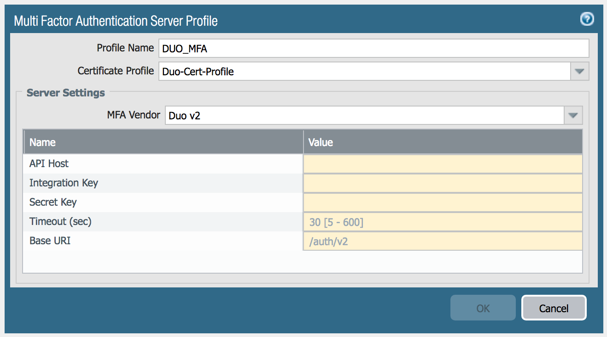
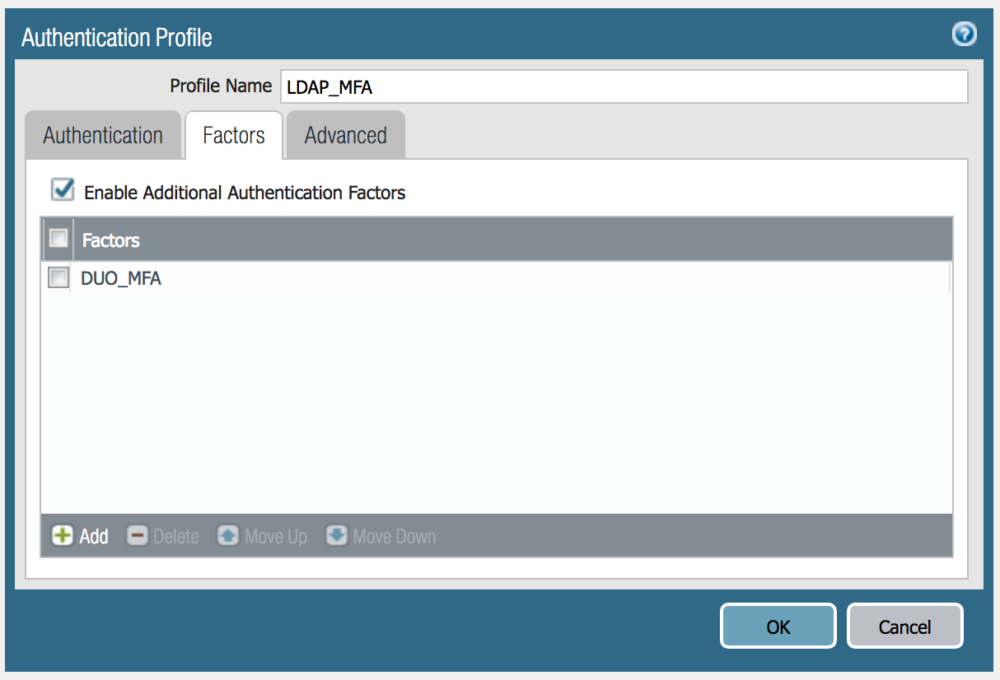
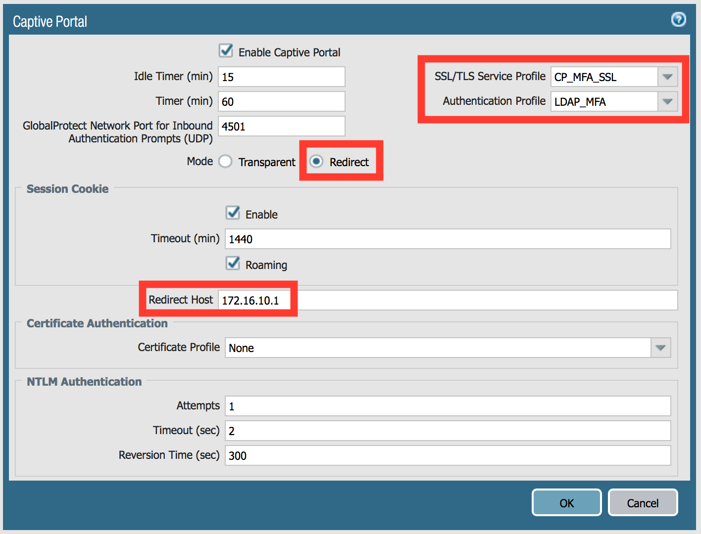
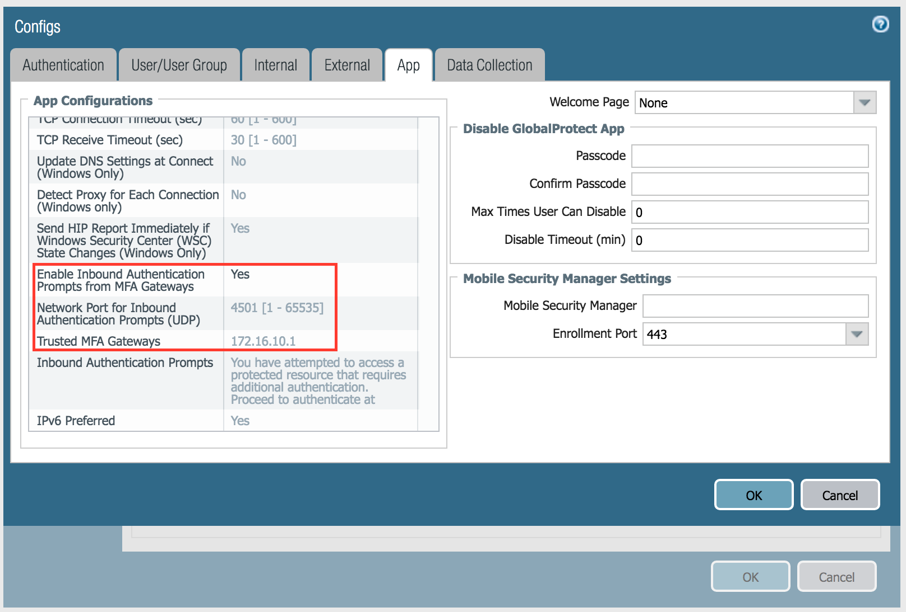
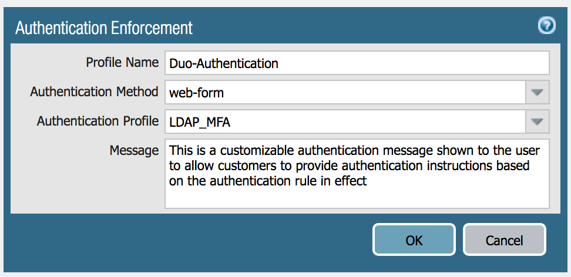

Multi-Factor Authentication
Duo Setup
- Create account
- Register device
- Set up application
Firewall Configuration
In the Device tab, add a Multi Factor Authentication server profile:
- Profile Name: DUO_MFA
- Certificate Profile: Duo-Cert-Profile (certificates have been imported for you already)
- MFA Vendor: Duo v2
- API Host, Integration Key, and Secret Key are specific to your Duo account.

Add a new Authentication Profile by cloning the existing LDAP_Auth profile. Call it LDAP_MFA, and add the DUO_MFA profile to it as an additional factor.

Captive Portal is used to deliver the MFA prompt, so that needs to be configured next. There should be a self-signed certificate for the portal already created (CP-MFA), as well as a SSL/TLS profile (CP_MFA_SSL) for you to use.
Configure Captive Portal for the GP tunnel interface as shown:

We want GlobalProtect to prompt us to authenticate for applications that aren't web based, so we need to add those settings. In the Agent config section of the GlobalProtect portal configuration, click on the App tab and include the following settings:
- Enable Inbound Authentication Prompts from MFA Gateways: Yes
- Network Port for Inbound Authentication Prompts (UDP): 4501
- Trusted MFA Gateways: 172.16.10.1

In Objects > Authentication, create a new authentication object using the authentication profile.

In the Authentication policy, create a rule to trigger the challenge for traffic destined for our web server. You may want to set the timeout to a smaller value to make testing easier.
- Policy Name: Require MFA
- Source Zone: GP
- Destination Zone: TRUST
- Destination Address: 10.0.1.12
- Service: service-http, service-rdp
- Authentication Enforcement: Duo-Authentication
Finally, create a Security policy allowing traffic to the web server.
- Policy Name: Lab MFA Test
- Source Zone: GP
- Destination Zone: TRUST
- Destination Address: 10.0.1.12
- Application: web-browsing, ms-rdp
- Service: application-default
- Action: allow
Commit the configuration.